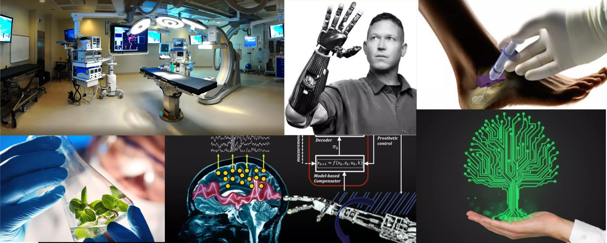

VENTILADOR MECANICO

back pag main
RX ARCO EN C

back pag main
monitor DE SIGNOS VITALES

back pag main
SOPORTE Y ALQUILER
Somos una compañia comprometida con la salud y la tecnologia de punta por esa razon manejamos equipos de ultima tecnologia con los mas altos estandares de calidad. Servicio de mantenimiento preventivo y correctivo de Equipos medicos. ofrecmos alquiler de equipos tales como MONITOR DE SIGNOS VITALES CON CABIDAD CSG Y EEG simens ED-200, ARCO EN C 7000B RESPIRADOR ARTIFICIAL : 1 AÑO DE COMPONENTES INTERNOS COMO EXTERNOS POR USO
¿Por qué es indispensable realizar mantenimiento a los equipos médicos? En el sector de la salud, el mantenimiento de dispositivos médicos —como los equipos de ultrasonido— juega un papel fundamental para la prevención de eventos adversos, en tal sentido que, este tipo de proceso operativo se ha convertido en un mecanismo para garantizar la seguridad de los usuarios, además, lo fundamental es que se sientan bien atendidos al momento de realizarse alguna intervención luego de haber pasado por un control, así estará completamente confiado en el centro médico. Hay que tener en cuenta también, que al no tener el mantenimiento preventivo de equipos médicos pueden presentarse inconvenientes en el diagnóstico de los mismos, dando resultados defectuosos. Lo ideal es que se minimicen los riesgos para que el paciente no se vea afectado.
un ingeniero tiene la capacidad de resolver cualquier problema y
si no hay problema tiene la capacidad de crearlos para no aburrirse

La Tecnologia en el Mundo de hoy

@ JEAN PAUL VEGA ROZO